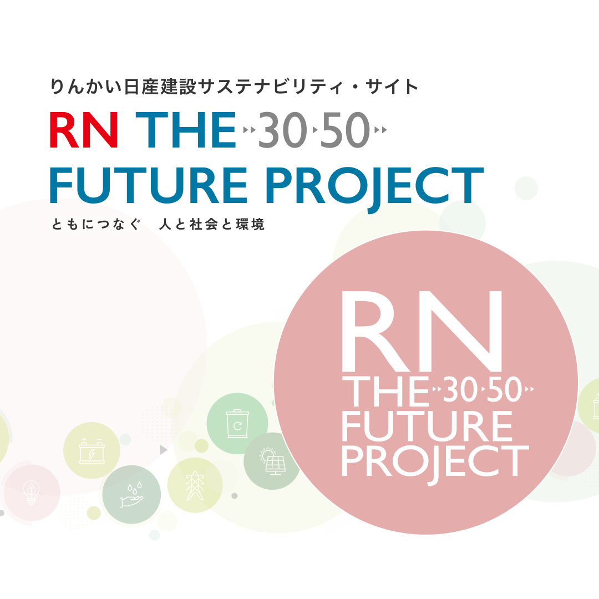
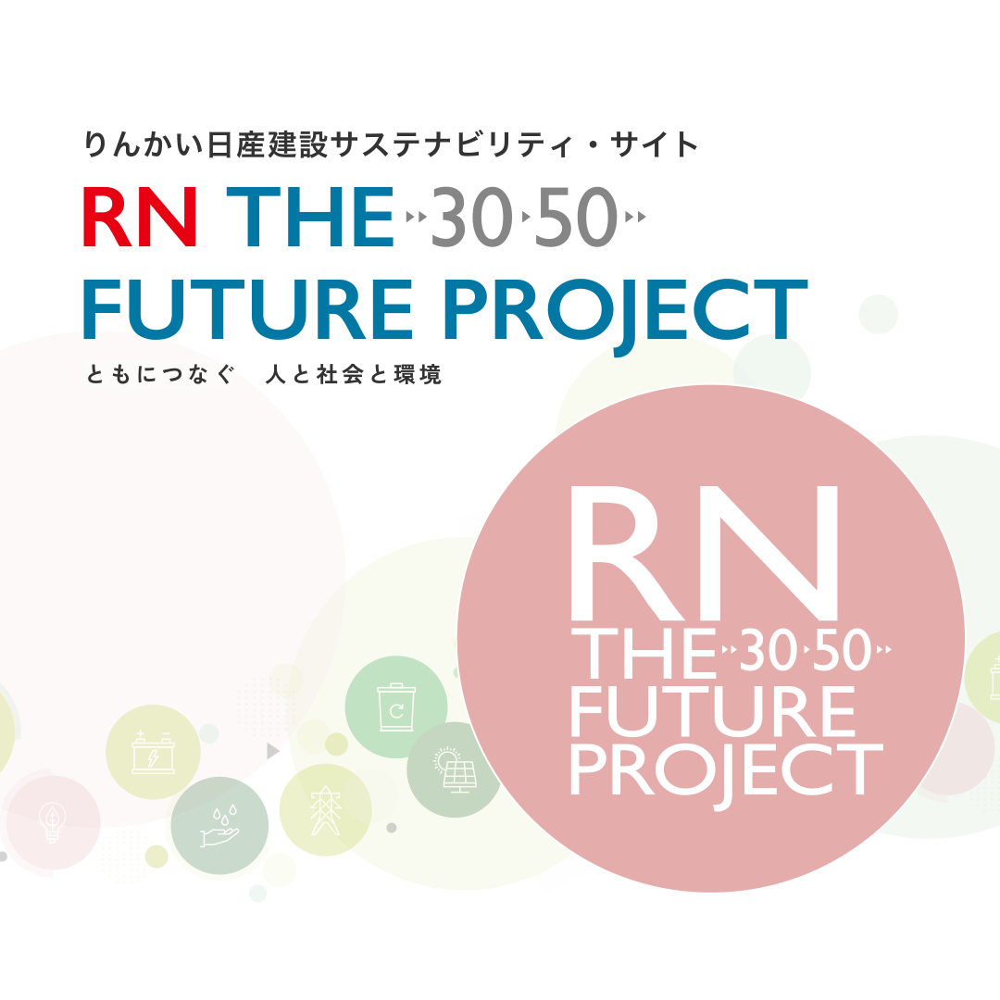
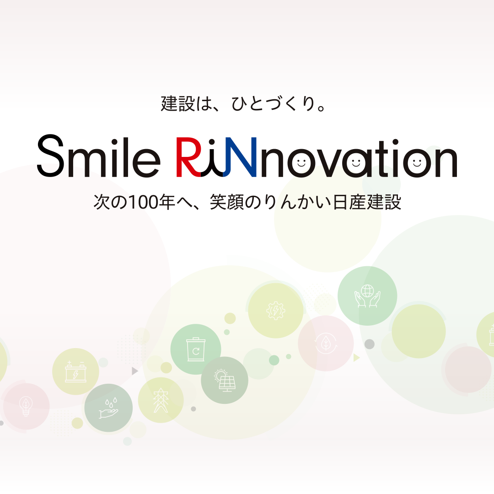
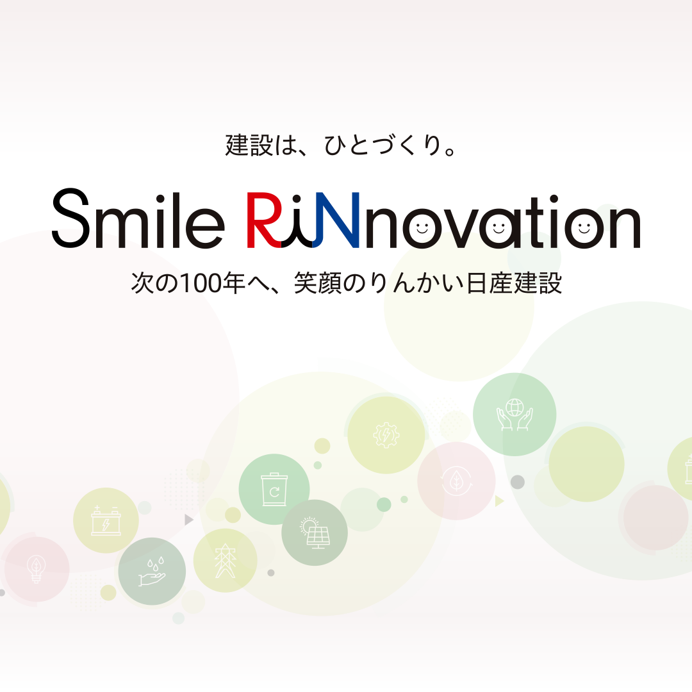
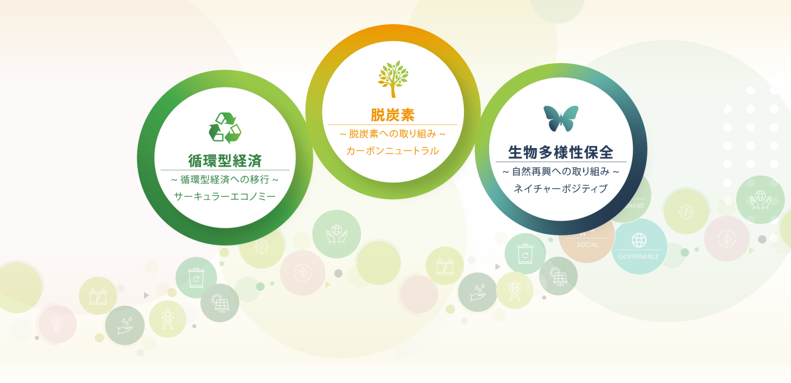
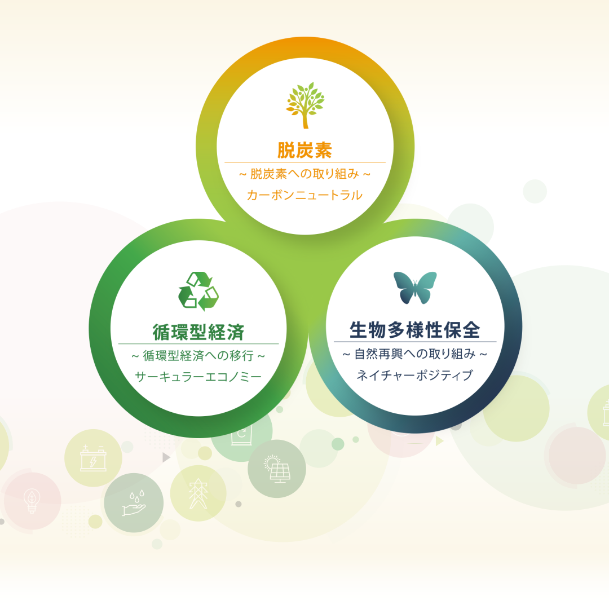
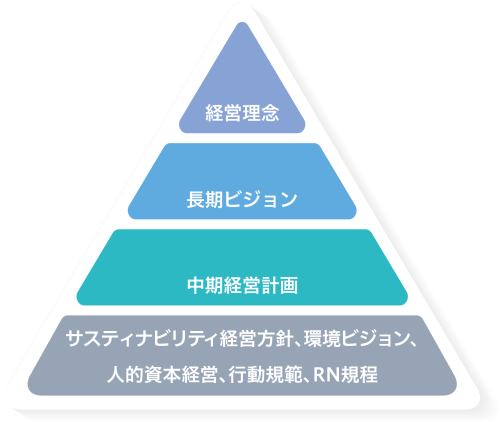

-
 

-
 

-  
理念体系
りんかい日産建設は、2024年の長期ビジョン策定に伴い、企業活動を通じた持続的な成長と社会貢献の基盤として、経営理念等を体系化しました。

経営理念
わたしたちは人・社会・環境を大切にするためにチャレンジし続けます

私たちりんかい日産建設は、創業時より建設を通じて皆様の暮らしの発展と豊かさに微力ながら貢献してまいりました。
2003年の会社合併時、これまでの理念などを統合・発展させ「人・社会・環境との共生」を経営理念として事業を営んでいます。
「人」はお客様、当社役職員、株主の皆様、当社をとりまく様々な皆様のことを指します。こちらには当然人に密接にかかわるガバナンスも指します。
「社会」は多様な集まり、考えを指します。
「環境」は地球、自然、社会、人、全ての環境を指します。
これら「人・社会・環境」との「 共生 」の実現が当社の理念であり、果たすべきものと考えています。
SPECIAL FEATURE
特集


データ・ダウンロード
RN サステナビリティ・レポート 2024
RN サステナビリティ・レポートをダウンロードすることができます。2022年、2023年のアーカイブも閲覧できます。